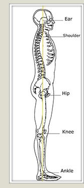
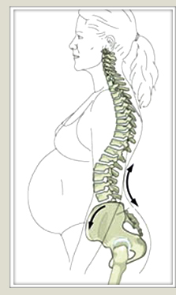

Ideal Posture for a Healthy Back
— Christina Landry, PA-C
Posture is the position in which we hold our bodies with certain positions such as sitting, standing and lying down. Good posture involves training your body to sit, stand, walk and lie down in positions where the least strain is placed on supporting muscles and ligaments during movement or weight-bearing activities. Proper posture has many benefits including:
- Helps keep bones and joints in correct alignment so that our muscles are used correctly, decreasing the abnormal wearing of joint surfaces that could result in degenerative arthritis and joint pain.
- Reduces stress on ligaments holding spinal joints together.
- Allows muscles to work more efficiently preventing muscle fatigue.
- Prevents muscle strain or overuse and preventing back and muscular pain.
Just as proper posture has benefits, poor posture has its consequences. Poor posture can lead to excessive strain on our muscles and may even cause them to relax. This is seen in the workplace when people have to remain in a certain position for extended periods of time. Their postural muscles are more prone to injury and back pain. There are several other factors that contribute to poor posture including obesity, pregnancy, stress, tight muscles and decreased flexibility. Most important, you must recognize your postural habits at home and in the workplace and try to correct them.
Here are some tips to ensure your posture is correct:
Correct sitting posture:
- Keep feet flat on floor with legs uncrossed.
- Knees should be at or below the level of your hips.
- Use a lumbar support to keep the normal curve to the low back.
- Relax the shoulders and keep forearms parallel to the ground.
- Avoid sitting in the same position for more than 30 minutes at a time.
Correct standing posture:
- Bear weight primarily on the balls of the feet.
- Keep knees slightly bent.
- Keep feet shoulder width apart.
- Let arms hang naturally by side.
- Stand straight and tall with shoulders pulled backwards.
- Tuck stomach in.
- Do not push head forward, backwards, or to the side – your earlobes should be in line with your shoulders.
Correct sleeping or lying down posture:
- Use a pillow under you head, not your shoulders- neck should be in a neutral position.
- Side sleepers- place pillow between knees and thighs to prevent rotation of the spine.
- Back sleepers – place pillow under your knees to maintain normal low back curvature.
- Abdomen sleepers- this position can be hard on your back but if you have to sleep this way, reduce the strain by placing a pillow under your pelvis. and lower abdomen. You can also try to use a pillow under your head if it doesn’t cause too much strain on your lower back. If you feel additional strain, try sleeping without a pillow under your head.
|
Pregnancy-Related Low Back Pain
— C. Chambliss Harrod, MD
Some have suggested Low Back Pain (LBP) may perform a functional role as a protective agent by focusing women’s attention on the physical stresses their bodies are undergoing by becoming more cautious during pregnancy. 19% of women with severe low back pain during pregnancy elect not to have another pregnancy due to their fear of low back pain recurrence.
LBP reportedly results in sick leave from work in as many as 30% of pregnant woman, persists longer than 6 months in 6% of cases, and disturbs sleep in over one-third. A nine-month prevalence rate of approximately 50% has been widely quoted in the literature. The incidence of women who experience LBP during their pregnancy ranges from 24% to 90% for different population samples in both retrospective and prospective studies.
Three common mechanisms have been proposed to cause/contribute to pregnancy-related LBP: Biomechanical/Musculoskeletal, hormones, and vascular (blood flow) related problems.
Biomechanical/Musculoskeletal:
The classic hypothesis is that weight gain during pregnancy results in postural changes that produce pain including primarily anterior displacement of the center of gravity of the trunk and abdomen. Women unconsciously shift their head and upper body posteriorly over their pelvis, inducing hyperlordosis (increased swayback) of the lumbar spine. Shift in load distribution generates stress on intervertebral disks, facet joints, and ligaments. However, research has largely refuted this theory and researchers argue that LBP is not created by hyperlordosis induced by pregnancy, but instead that women with a large lumbar lordosis prepartum are more vulnerable to LBP during pregnancy. The short time frame in which one’s weight increases may play a role (secondary) in the development of LBP. Women gain between 26.4 to 26.6 lbs, with the uterus expanding 150 times in size and contributing to half of the overall weight increase. The weight of the gravid uterus may also directly compress on the base of the pelvis and lumbosacral plexus, and cause pain radiation to the buttocks and legs. 25% of pregnant women with LBP changed their job compared to 3% in a control group.

Etiology-Hormonal:
Correlation of the onset of menstruation and menopause with LBP suggests a hormonal role as the hormones relaxin, estrogen, progesterone, and cortisol all demonstrate increased serum levels during pregnancy. Relaxin is the hormone most notably implicated in pregnancy-related LBP and current theory suggests that high levels of relaxin in the first trimester, which stimulates collagenase expression, may increase joint laxity and promote LBP while promoting expansion of the cervix and uterus. Estrogen is believed to enhance relaxin’s effect on joints either by increasing relaxin receptor sensitivity or by directly influencing joints. While these changes may directly lead to pelvic instability, they accommodate for the fetus during pregnancy and delivery. It may act as a protective agent by reducing fracture risk due to a fall or other trauma during pregnancy. Despite these findings, an association between serum relaxin levels, joint laxity, and LBP during pregnancy remains unclear.
Etiology-Vascular:
Gravid uterus can apply pressure on the aorta and vena cava, especially between L1 to L5. In addition, there is an average increase in water retention of up to 8.5 liters during pregnancy. Increased blood flow to pelvic organs, venous distensibility due to progesterone, and inadequate collateral venous circulation distal to the point of occlusion can exacerbate symptoms.
Risk Factors:
94% of women who suffer from LBP during pregnancy will develop LBP in subsequent pregnancies. Women with any history of back pain are 50% more likely to experience LBP during pregnancy than women with no prior back pain and that pain will persist for a longer duration. The two most debated risk factors for LBP during pregnancy- age and parity (multiple pregnancies). Multiparous women were found to experience pain for a longer duration of time and developed back pain especially in the final trimester of pregnancy. Also, ethnicity, oral contraceptive use, educational level, low socioeconomic class, occupation, and vocational risks have also been identified as risk factors for LBP. In contrast, other factors such as maternal height, weight, and weight gain along with the baby’s weight have been confirmed not to have an effect on LBP.
Clinical Presentation-History/Symptoms:
1/3 of all pregnant women describe severe LBP sometime during their pregnancy. Pregnant women also report similar times of pain onset and indicate the fifth and sixth months as time periods in which backache was most prevalent. Several studies also reported times of the day for worst pain-the evening hours seem to be the most troublesome. Approximately 67% of pregnant women suffer from night discomfort or backache and 36% have night backache so severe it wakes them from sleep. Prevalence of women with lumbar pain typically remains constant throughout pregnancy, whereas the prevalence of posterior pelvic pain increases during the middle and late stages of pregnancy. Between 45.5% and 65% of women report radiation of pain into the buttocks and as many as half report experiencing LBP with radiation down one leg and < 25% down both legs.
Clinical Presentation-Physical Examination/Signs:
Posterior pelvic pain presents differently than lumbar pain and tends to be acute, pregnancy-induced, and rare among non-pregnant patients. Pain-free periods are experienced and abatement generally occurs 3 months postpartum. Clinically, patients present with backache and a “deep, boring, ill-defined pain that is poorly localized” and radiates down the posterolateral thigh as far as the calf. It is theorized large innervation of the sacroiliac joint (L4-S1) contributes to the referred pain experienced by pregnant women. The term “posterior pelvic pain” intentionally adopted to emphasize its diffuse anatomic origin over the sacroiliac area. Also, while pregnancy did not affect the progression of scoliosis in untreated patients, these patients had a slightly increased risk of back pain.
Work-Up:
General rule: Avoid exposing fetus to any ionizing radiation. However, risks to developing fetus are small, and no type of physical or mental abnormality has been reported with fetal exposure < 10 rads (dose of 3-part spinal radiograph series is below this). 5 rads has been proposed as the accepted cumulative dose of ionizing radiation during pregnancy. Non-urgent imaging should be avoided during the 10th to 17th weeks of gestation (most vulnerable period for central nervous system teratogenesis). Ultrasonography can be satisfactory, inexpensive, and a safe alternative to CT, which is of limited use as it requires high levels of ionizing radiation. MRI is typically ok but Gadolinium-based contrast should not be used as it crosses the placenta after intravenous injection.
Management/Treatment:
Most common, but controversial method is physical therapy. Those who present with both lumbar and pelvic pain symptoms should avoid back-strengthening exercises until the posterior pelvic symptoms resolve as they may worsen otherwise. The goal of exercise during pregnancy is to improve or maintain muscle tone and not to control weight gain or to correct posture. Hypertension, diabetes melitus, history of premature labor, placenta previa, threatened abortion, post date, and multiple gestations are all contraindications during pregnancy. In women with nocturnal pain, decreased time spent in the supine position may alleviate symptoms. Advising women to sleep on their side may help to reduce pressure on the vena cava and resolve pain that is possibly vascular in origin.
Medications:
NSAIDs and other anti-prostaglandin medications are contraindicated during pregnancy. One potential intervention may be the use of relaxin receptor blockers or relaxin inhibitors, if conclusive evidence points to relaxin as a cause of low back pain.
In summary, prevention is the key. Pain intensity during pregnancy has been positively associate with duration of pain postpartum. Women who did not have the ability to take breaks at work report experiencing back pain symptoms 6 years postpartum. Women who are more physically fit prepartum appear to have a reduced risk of developing lumbar pain during pregnancy.
|